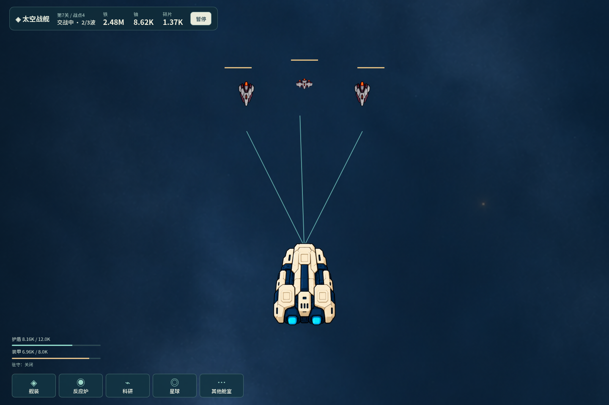
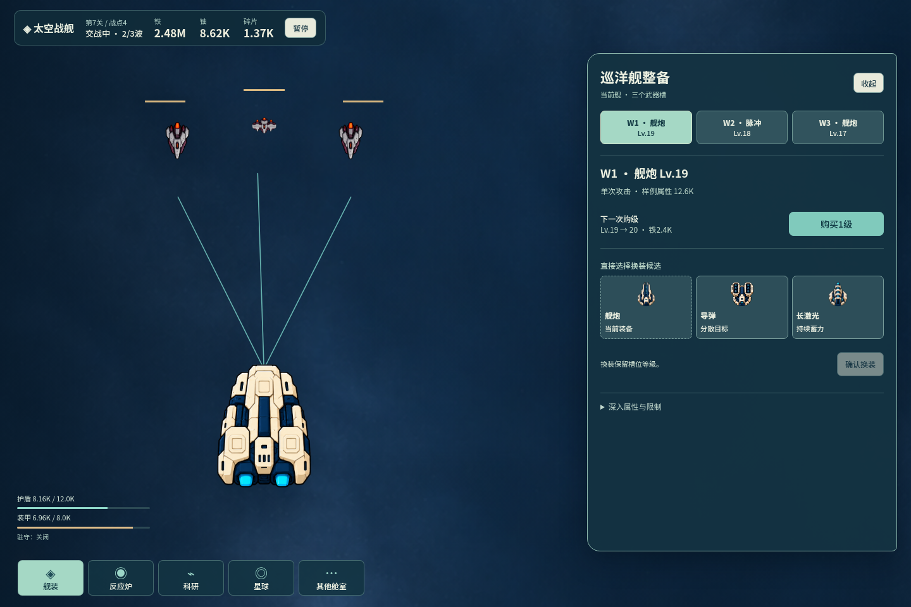
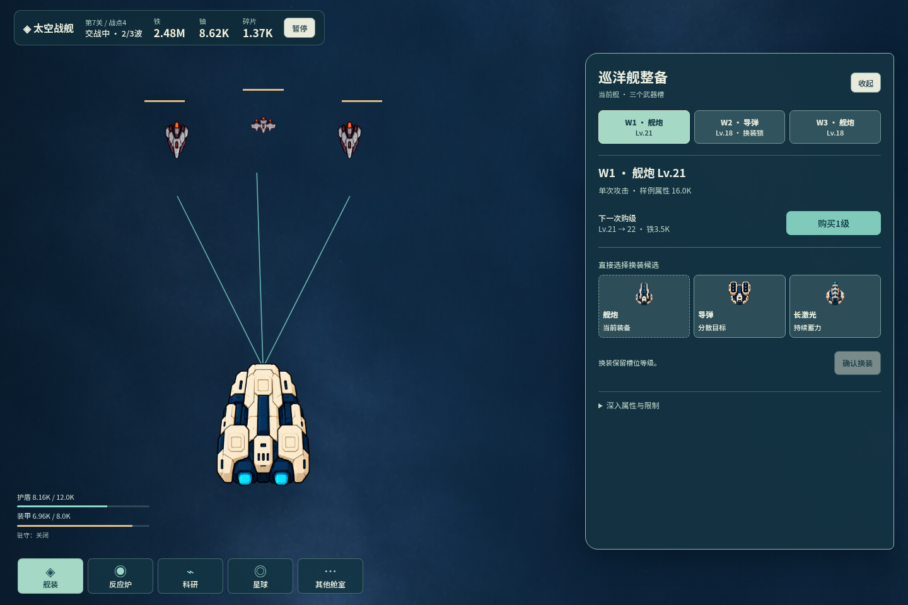
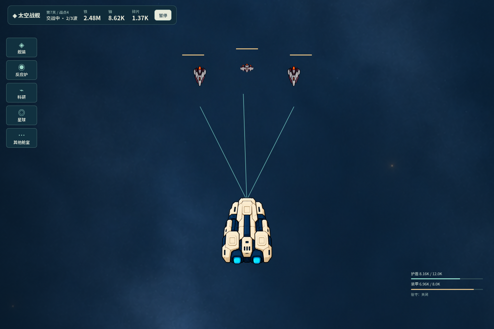
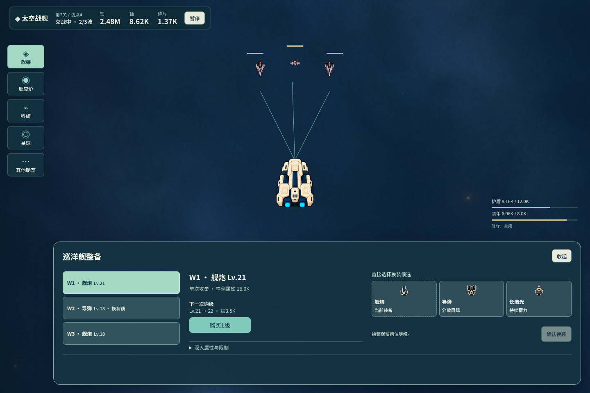
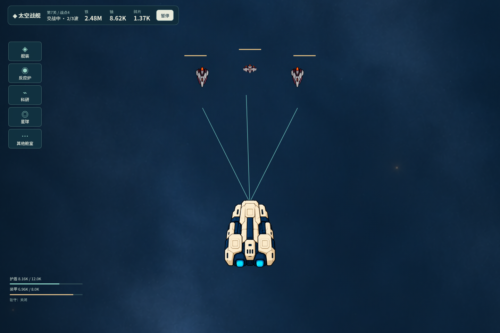
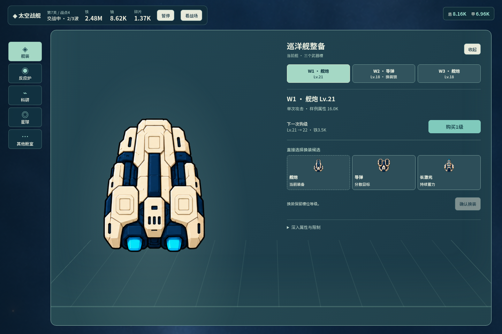
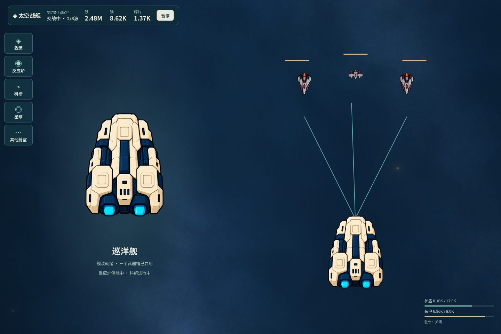
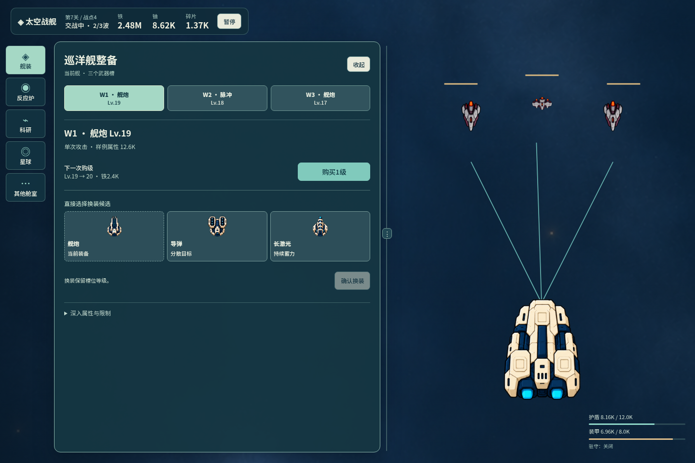

先看空闲、打开、连续操作，再比较观看与操作的取舍。均为阶段1粗参考，未选定方案，未连接游戏。
统一模板 · 方向与粗记录 · 接口/版本边界
图像链接可放大；“进入参考”可实际做W1两次购级→W2选导弹并换装→W3购级→返回W1。审阅工具可以切方向与状态，不属于产品UI。
全宽环境常驻，工作点按需浮出；观察对象会左移。



观看在上，操作横向铺在下沿；打开后观看区缩小。


主场景切换为舱室；战况可读，完整交火需一步返回。


概览/工作场与交火保留位置；分界可调，长期占用双场景。

